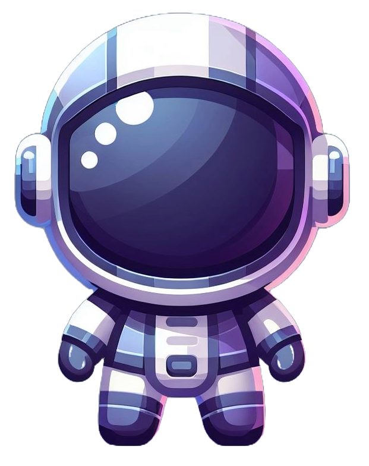

L'histoire:
Les joueurs incarnent des personnes qui se réveillent sur Nyxalis, une planète qui devrait leur être familière. Mais, un coup d'œil à travers le hublot abimé leur suffit à dire qu'il y a une erreur. La planète verte est violette. Au milieu de la confusion, quelqu'un de l'équipage découvre que la capsule cryogénique a en fait dysfonctionnée, et que leur sommeil de glace a duré plusieurs millénaires au lieu d'une centaine d'années. Ils sont sur la bonne planète. Seulement, ils se sont trompés d'ère. Soudain, la porte du vaisseau c`ede. Une ombre tombe sur nos voyageurs. Une horreur sans nom, libre de toute définition, les regarde. Elle, qui n'a jamais eu de visage, ne peut s'empêcher d'envier ces êtres. Elle avance. Ils reculent. Elle ne comprend pas. Ils ne veulent pas la comprendre. Ou peut-être ne peuvent-ils pas la comprendre ? Pourront-ils transcender leurs peurs, le temps et leur humanité pour survivre ?
Le personnage principal:
Incarné par le joueur, l'astronaute devra surmonter les obstacles afin de survivre sur cette planète hostile à la vie humaine.
Le personnage accompagnateur: